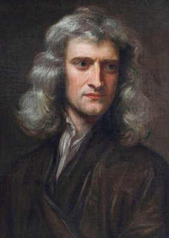
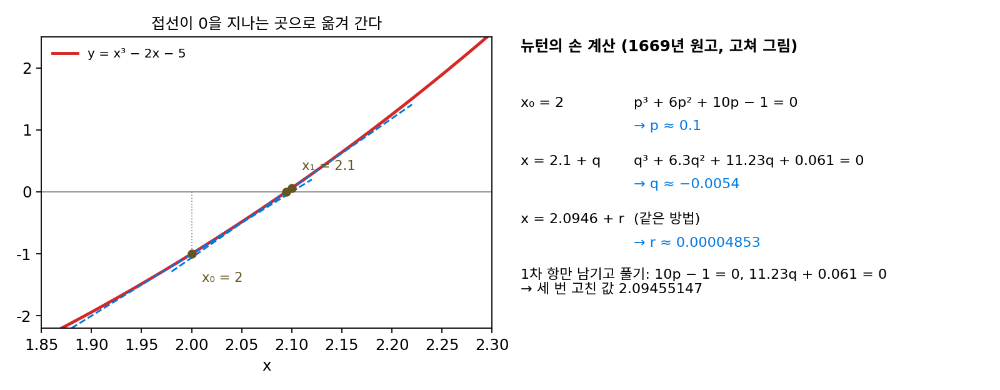
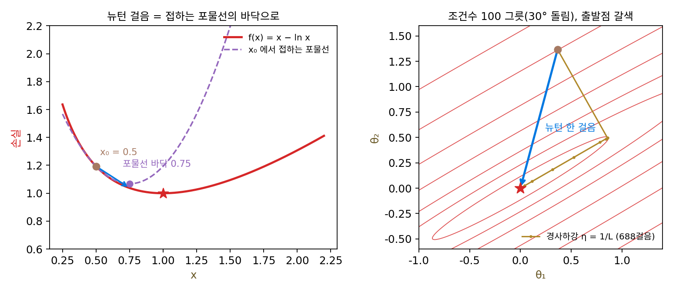
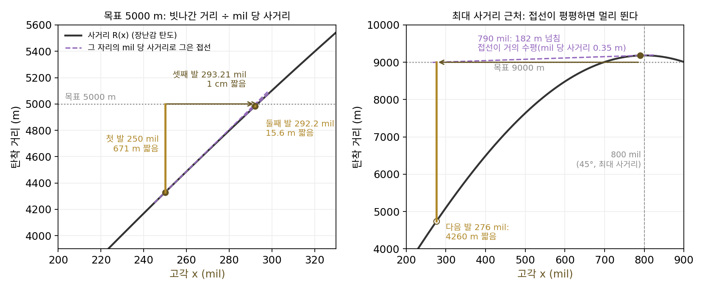
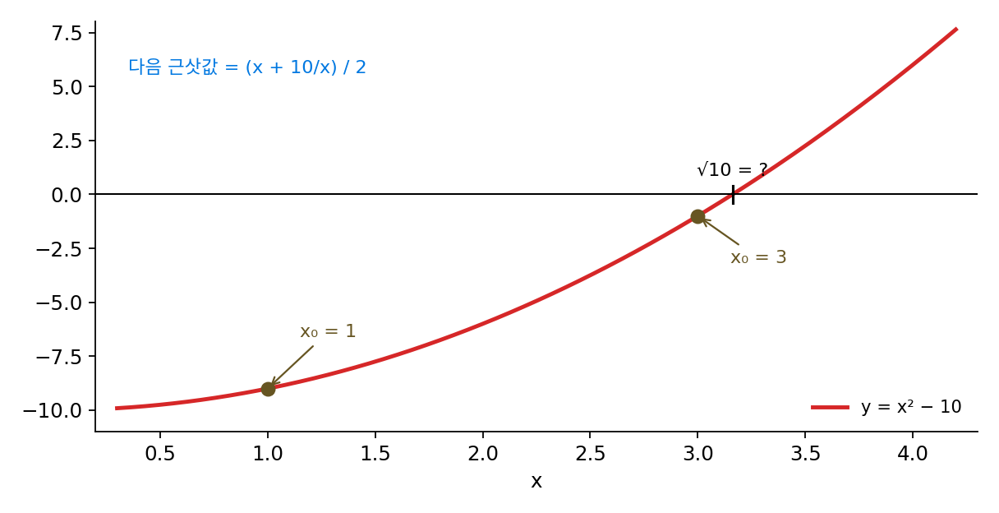
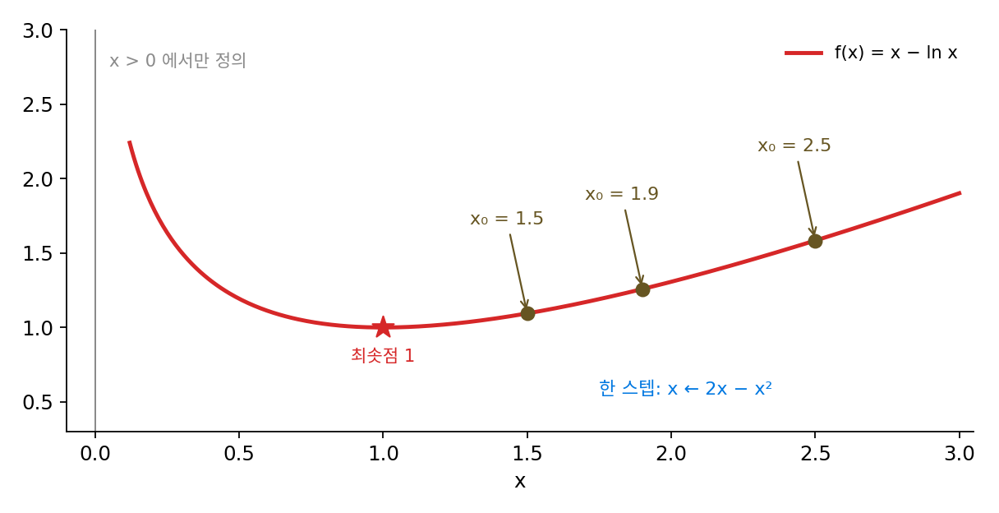
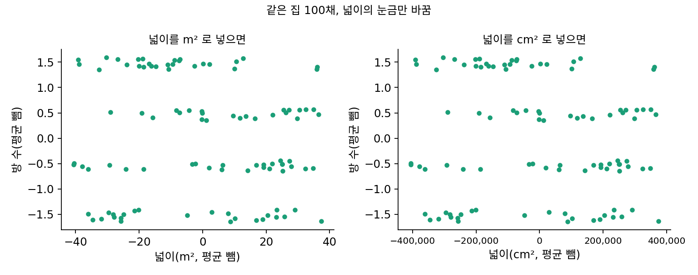
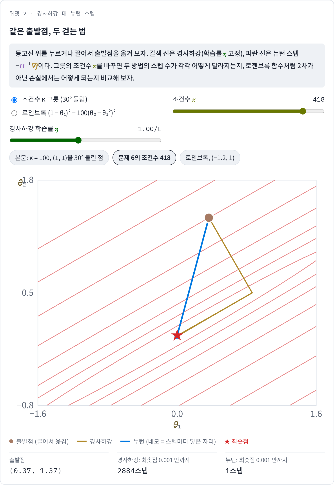

뉴턴 스텝: 2차 근사의 바닥으로 뛴다
헤시안을 알면 모든 방향의 휨을 아는데, 그 지식으로 스텝을 어떻게 고쳐야 할까? 파라미터가 하나인 포물선 ½a·w²에서는 학습률을 1/a로 잡으면 한 스텝에 최솟점 w = 0에 닿았다. 스텝마다 w = 0까지의 거리에 1 − ηa가 곱해지는데, ηa = 1이면 그 배율이 0이 되기 때문이다. 문제는 파라미터가 여럿일 때다. 조건수가 100인 그릇에서 학습률은 하나뿐이라, 가파른 방향의 휨 100에 맞추면 완만한 방향은 1/100씩만 줄어든다. 학습률 하나를 모든 방향에 같이 쓰지 말고, 방향마다 그 방향의 휨으로 나눈 학습률을 따로 줄 수는 없을까? 그리고 휨이 자리마다 바뀌는 2차가 아닌 손실에서도 그렇게 할 수 있을까?
역사: 접선으로 근을 좁혀 가던 방법이 최적화로

휨으로 스텝을 고치는 방법은 최적화가 아니라 방정식을 푸는 일에서 처음 나왔다. 아이작 뉴턴(Isaac Newton)은 1669년에 쓴 원고 「항이 무한히 많은 방정식에 의한 해석에 대하여(De analysi per aequationes numero terminorum infinitas)」에서 3차 방정식 x³ − 2x − 5 = 0의 근을 손으로 좁혀 갔다. 근의 정수 부분이 2라는 데서 시작해 x = 2 + p로 놓으면 p에 대한 방정식 p³ + 6p² + 10p − 1 = 0이 나온다. 뉴턴은 p가 작으니 p², p³을 버리고 10p − 1 = 0에서 p ≈ 0.1을 얻었다. 다시 x = 2.1 + q로 놓고 같은 계산(작은 수의 제곱과 세제곱을 버리고 1차 방정식 풀기)을 해서 q ≈ −0.0054, 그다음 r ≈ 0.00004853을 얻어, 세 번 고친 값 2.09455147에 이르렀다. 뉴턴은 소수 자리를 다 남기면 맞는 자릿수가 한 번에 두 배씩 는다는 것도 알아보았다. 뉴턴은 이 방법을 도함수로 적지 않고 다항식을 다시 쓰는 계산으로만 다루었으며, 원고는 오래 출판되지 않았다. 처음 책에 실린 것은 1685년 존 월리스(John Wallis)의 『대수학』에서였다.
1690년 조지프 랩슨(Joseph Raphson)은 고칠 때마다 새 다항식을 만드는 번거로운 단계를 없애고, 처음 다항식에서 바로 다음 값을 얻는 되풀이 계산으로 다듬었다. 그리고 1740년 토머스 심프슨(Thomas Simpson)은 『사색적이고 혼합된 수학의 여러 흥미롭고 쓸모 있는 주제에 관한 시론』에서 처음으로 도함수(그는 「유율」이라 불렀다)를 써서 방법을 적었다. 다항식이 아닌 방정식 하나에도, 미지수 둘인 연립방정식에도 쓰는 꼴이었다. 심프슨은 이 방법이 극대·극소를 찾는 문제에도 쓰인다는 것, 곧 도함수가 0인 곳을 같은 방법으로 찾으면 된다는 것도 적었다고 한다(이프마, 1995). 뉴턴법의 역사를 정리한 수치해석학자 페터 도이플하르트(Peter Deuflhard)는 그래서 방정식 하나에는 「뉴턴–랩슨 방법」, 일반적인 경우에는 「뉴턴–심프슨 방법」이라는 이름을 썼다. 지금 이 장이 쓰는 꼴은 심프슨의 것에 가깝다.


접선이 0을 지나는 곳으로 옮기는 거면 x − f(x)/f′(x) 한 줄이잖아요. 뉴턴에서 심프슨까지 70년이나 걸린 게 이상해요.

뉴턴의 원고를 다시 보세요. x = 2 + p로 놓고 p의 다항식을 새로 만들었고, 2.1 + q로 고칠 때 또 새 다항식을 만들었죠. 그 계산을 종이와 펜으로 한다면 어디가 힘들까요?

음, (2.1 + q)³을 펼쳐서 계수를 처음부터 다시 구해야 하니까… 고칠 때마다 자릿수가 늘어서 계수 계산이 점점 길어지겠네요.

그래요. 그 단계를 없앤 게 1690년 랩슨이고, 도함수(유율)로 적은 건 1740년 심프슨이에요. 도함수로 적어야 다항식이 아닌 방정식이나 미지수 둘인 연립방정식에도 같은 꼴을 쓸 수 있었어요.

다항식을 다시 쓰는 방식이면 ln이나 지수 함수 같은 데는 아예 못 쓰는 거네요. f′라는 기호 하나가 그만큼 큰 일이었구나.

심프슨은 극대·극소에도 쓴다고 했잖아요. 근을 찾던 이 스텝을 최소화로 옮기면, 접선 대신 무엇을 그어서 어디로 옮겨야 해요?
접하는 포물선의 바닥으로
최소화로 옮기면 무엇을 하는지부터 파라미터 하나로 보자. 최솟점을 미리 알 수 있고 휨이 자리마다 바뀌는 함수로 f(x) = x − ln x를 고른다. 1차 미분은 1 − 1/x, 2차 미분은 1/x²이라 최솟점이 x* = 1이고, x가 작을수록 더 가파르게 휜다. x₀ = 0.5에서 그래디언트는 −1, 휨은 4다. x₀ = 0.5에서 그래디언트와 휨이 같은 포물선, 곧 테일러 전개를 둘째 항까지 쓴 2차 근사를 그어 보면, 그 포물선의 바닥은 0.5 − (−1)/4 = 0.75다. 2차 근사의 바닥으로 옮기고, 거기서 다시 포물선을 그어 그 바닥으로 옮기기를 되풀이한다.
| 스텝 k | xₖ | 바닥까지 거리 1 − xₖ |
|---|---|---|
| 0 | 0.5 | 0.5 |
| 1 | 0.75 | 0.25 |
| 2 | 0.9375 | 0.0625 |
| 3 | 0.99609 | 0.0039 |
| 4 | 0.9999847 | 0.0000153 |
| 5 | 0.9999999998 | 0.00000000023 |
거리가 0.5, 0.25, 0.0625, 0.0039, …로 스텝마다 제곱이 된다. 이 함수에서는 한 스텝이 x ← 2x − x²이라 1 − (2x − x²) = (1 − x)²이 그대로 성립한다. 맞는 자릿수가 한 번에 두 배씩 늘어난다는, 뉴턴이 손 계산에서 본 성질이다. 같은 출발점에서 경사하강을 하되 출발점의 휨 4에 맞춘 안전한 학습률 0.25를 쓰면 거리는 0.25, 0.167, 0.117, 0.084, …로 줄고, 최솟점 1 근처에서는 스텝마다 0.75배씩만 준다. 거리가 10⁻⁸ 안에 들기까지 뉴턴은 다섯 스텝, 경사하강은 60스텝이다. 파라미터가 하나일 때 뉴턴의 한 스텝은 「학습률을 지금 x에서의 휨의 역수로 고르는 경사하강」과 같다.
파라미터가 여럿이면 2차 근사는 지금 자리 θ에서 스텝 Δθ만큼 옮긴 손실을 f(θ) + ∇fᵀΔθ + ½ΔθᵀHΔθ로 근사하는 그릇이다. 이 그릇의 바닥은 Δθ로 미분한 것이 0인 곳, 곧 ∇f + HΔθ = 0인 곳이다. 이렇게 지금 자리의 그래디언트와 헤시안으로 2차 근사를 세우고 그 바닥으로 옮기는 스텝을 뉴턴 스텝 (2차 근사의 바닥으로 가는 스텝 / Newton step)이라 하고, 이것을 되풀이하는 방법을 뉴턴법이라 한다.
경사하강의 −η∇f와 비교하면, 학습률이라는 숫자 하나가 있던 곳에 헤시안의 역행렬이 들어갔다. 고유 방향마다 보면 그 뜻이 드러난다. 고윳값 λ인 방향의 그래디언트 성분을 λ로 나누니, 방향마다 학습률을 1/λ로 따로 준 경사하강이다. 학습률을 따로 고를 필요도 없다.
가장 크게 휜 방향과 가장 작게 휜 방향의 곡률 비가 100인 그릇 ½(θ₁² + 100θ₂²)에서 (1, 1)을 출발점으로 해 보자. 그래디언트는 (1, 100)이라, 학습률 1/100의 경사하강은 첫 스텝에 (−0.01, −1)만큼 옮긴다. 가파른 θ₂는 한 번에 바닥에 닿지만 θ₁은 0.99가 되어, 그 뒤로는 스텝마다 0.99배씩 줄어든다. 바닥까지 거리가 0.001 안에 들기까지 688스텝, 두 방향의 배율을 맞춘 가장 좋은 고정 학습률을 써도 363스텝이다. 헤시안은 [[1, 0], [0, 100]]이라 뉴턴 스텝은 −(1/1, 100/100) = (−1, −1)이고, 한 스텝 만에 정확히 원점이다. 그릇을 30° 돌려 축과 어긋나게 놓아도 경사하강은 688스텝 그대로이고 뉴턴은 여전히 한 스텝이다. 2차 함수의 2차 근사는 그 함수 자신이므로, 그 바닥으로 가는 스텝은 진짜 바닥으로 간다.

2차가 아닌 손실에서는 2차 근사가 어긋나므로 한 스텝에 닿지 않는다. 최적화 방법을 시험할 때 흔히 쓰는, 1960년 하워드 로젠브록(Howard Rosenbrock)이 낸 바나나 모양의 골짜기 (1 − θ₁)² + 100(θ₂ − θ₁²)²를 (−1.2, 1)에서 내려가 보자. 바닥은 (1, 1)이다. 뉴턴법은 다섯 스텝 만에 최솟점의 0.001 안에 들고, 경사하강은 학습률 0.002로 8,500스텝이 걸린다. 다만 뉴턴의 길이 고르지는 않았다. 둘째 스텝에서 손실이 4.73에서 1,411.85로 크게 올랐다가 셋째 스텝에 0.056으로 떨어졌다. 2차 근사는 지금 자리 가까이에서만 맞기 때문에, 2차 근사의 최솟점이 멀리 있으면 엉뚱한 곳으로 뛸 수 있다. 실제로 쓰는 뉴턴법은 스텝의 길이를 줄여 가며 손실이 줄어드는지 확인하는 장치를 함께 둔다.
포병의 사표: 빗나간 거리를 「mil 당 사거리」로 나누기
전쟁 영화나 전쟁 게임에서 관측병이 무전기에 대고 「200 m 더!」라고 외치는 장면을 본 적이 있을 것이다. 그런데 포반이 실제로 고치는 것은 거리가 아니라 포신을 드는 각도, 곧 고각이다. 관측병이 거리로 불러 준 수정을 고각으로 바꾸는 계산 안에 방금 본 뉴턴 스텝이 들어 있다. 이번에는 최솟점이 아니라 근을 찾는, 역사 소절에서 뉴턴이 하던 쪽의 계산이다.
포병은 고각을 mil 단위로 잰다. 원 한 바퀴가 6400 mil이라 45°가 800 mil이다. 포마다 만들어 둔 사표(사거리와 고각을 맞춰 적은 표)에는 사거리마다 고각 외에도 몇 가지 값이 적혀 있다. 1941년 미 육군 기술 교범 TM 6-215 『약식 사표』를 보면, 표의 한 열은 「고각을 1 mil 바꿀 때 사거리가 몇 야드 바뀌는가」이고, 다른 열은 「사거리를 100야드 바꾸려면 고각을 몇 mil 바꾸는가」다. 두 열 모두 「표에 적힌 사거리에서 50야드 안에서만 쓴다」는 단서가 붙어 있다. 관측병이 부른 거리를 고각으로 바꾸려면 빗나간 거리를 mil 당 사거리로 나누면 된다.
숫자로 따라가 보자. 공기 저항을 뺀 장난감 탄도로, 포구 속도 초속 300 m인 포의 사거리를 고각 x의 함수 R(x) = (300²/9.8) sin 2x로 둔다(최대 사거리 9184 m, 고각 800 mil). 실제 사표는 공기 저항과 기온까지 넣어 만든 표라 숫자가 다르다. 목표는 5000 m에 있다. 지도에서 대략 계산한 고각 250 mil로 첫 발을 쏘니 4329 m에 떨어져 671 m 짧았다. 그 사거리에서 mil 당 사거리는 15.9 m라 671 ÷ 15.9 = 42.2 mil을 올린다. 고각 292.2 mil로 쏜 둘째 발은 4984.4 m에 떨어져 15.6 m 짧았다. 거기서 mil 당 사거리 15.1 m로 다시 나눠 1.03 mil을 올린 셋째 발(293.21 mil)은 목표에서 1 cm 짧게 떨어진다. 빗나간 거리가 671 m, 15.6 m, 1 cm로 줄어드니, 맞는 자릿수가 한 번에 두 배씩 느는 뉴턴의 성질이 그대로 보인다.

빗나간 거리 R(x) − 5000이 그래디언트 자리에, mil 당 사거리 R′(x)가 휨 자리에 들어간다. 고각을 고치는 계산은 x ← x − (R(x) − 5000)/R′(x), 접선이 목표 높이를 지나는 곳으로 옮기는 근 찾기 뉴턴 스텝이다. 사표 한 줄의 값을 끝까지 고정해서 쓰면 어떻게 될까? 3000 m 행에서 잰 mil 당 사거리 17.0 m로 계속 나누면 빗나간 거리가 671 m, 58 m, 6.4 m, 0.72 m로 스텝마다 9분의 1쯤씩만 준다. 휨을 한 번 재고 고정한 학습률로 걷는 경사하강처럼, 줄어드는 비율이 일정해진다.
뉴턴 스텝이 크게 빗나가는 자리도 사표에 있다. 고각이 45°에 가까우면 고각을 조금 바꿔도 사거리가 거의 변하지 않는다. 목표 9000 m를 고각 790 mil로 쏘면 9182 m에 떨어져 182 m 넘치는데, 고각 790 mil의 mil 당 사거리는 0.35 m뿐이다. 182 ÷ 0.35로 514 mil을 내리면 고각이 276 mil이 되고, 포탄은 4740 m에 떨어져 4260 m나 짧다. 접선이 거의 수평이면 그 접선이 목표 높이를 지나는 곳은 아주 멀다. 로젠브록 골짜기에서 2차 근사의 최솟점이 멀리 있을 때 뉴턴 스텝이 엉뚱한 곳으로 뛴 것과 같다. 같은 목표라도 700 mil에서 쏘면 697.95, 697.97 mil로 두 번 만에 맞는다. TM 6-215가 열마다 붙인 「표의 사거리에서 50야드 안」이라는 단서는, 접선이 함수를 잘 흉내 내는 범위 안에서만 그 나눗셈을 믿으라는 말이다.
ML에서: 통계 모델의 기본 해법
파라미터가 수십, 수천 개인 통계 모델에서는 지금도 뉴턴법이 기본 해법이다. R의 glm 함수는 로지스틱 회귀 같은 일반화 선형 모델을 「반복 재가중 최소제곱(IRLS)」으로 푸는데, 로지스틱 회귀에서 이 방법의 한 스텝은 뉴턴 스텝과 같다. scikit-learn의 LogisticRegression에도 solver='newton-cg', 'newton-cholesky' 같은 뉴턴 계열 선택이 있다. 이런 모델은 손실이 볼록하고 헤시안이 작아서, 최솟점 가까이에서 맞는 자릿수가 두 배씩 느는 뉴턴법의 장점을 그대로 누린다. 그렇다면 신경망 학습에서는 왜 뉴턴법을 보기 어려울까? 걸림돌은 둘인데, 하나는 극소점이 아닌 평평한 곳(안장점)에 끌려가는 성질이고 다른 하나는 헤시안의 크기다.
문제 4. 계산기 없이 √10 구하기
바빌로니아 사람들이 썼다고 전해지는 방법으로 √10을 구하는데, 근삿값 x에서 시작해 x와 10/x의 평균을 다음 근삿값으로 삼는다. (가) x₀ = 3에서 세 번 되풀이하면 맞는 자릿수는 어떻게 늘어나는가? (나) x₀ = 1에서 시작하면? (다) 이 방법이 x² − 10 = 0의 뉴턴 스텝과 같음을 보여라.

3 → (3 + 10/3)/2 = 3.1667, 그다음 3.162281, 3.16227766이에요. √10 = 3.16227766이니까 오차가 0.16, 0.0044, 0.000003, 0.0000000000015로 줄어요.
오차를 10의 거듭제곱으로 적으면 10⁻¹, 10⁻³, 10⁻⁶, 10⁻¹²쯤이야. 한 번에 맞는 자릿수가 두 배가 돼.
x₀ = 1에서 시작하면요?

(1 + 10)/2 = 5.5요. 오히려 3보다 더 멀어졌어요. 그다음 3.659, 3.196, 3.16246, 3.1622777… 처음 두 번은 느리다가 가까워지니까 갑자기 자릿수가 두 배씩 늘어요.
(다)는요? x² − 10의 그래프에 접선을 그어 보세요.
접선이 0을 지나는 곳이 근 찾기 뉴턴 스텝이니까 x − (x² − 10)/(2x)예요. 정리하면… x/2 + 5/x = (x + 10/x)/2. 평균 내기랑 같네요.
x² − 10을 어떤 함수의 도함수로 보면요?

f(x) = x³/3 − 10x의 도함수요. 그럼 이건 그 함수의 그래디언트가 0인 곳을 뉴턴 스텝으로 찾는 거기도 해요. 근 찾기와 최소화가 같은 계산이에요.

음수에서 출발하면 −√10으로 가는 거야? 거기도 그래디언트는 0인데.
응. 그런데 x³/3 − 10x에서 x = √10은 극소점이고 x = −√10은 극대점이야. 음수에서 출발하면 극대점으로 가겠네.
포병이 고각을 고치던 계산을 옆에 놓아 볼까요? 첫 발이 671 m 짧았을 때 고각 250 mil의 mil 당 사거리 15.9 m로 나눴죠. x₀ = 1에서 5.5로 튄 것은 어느 쪽 이야기와 닮았나요?
빗나간 거리 ÷ mil 당 사거리가 (x² − 10) ÷ 2x예요. x = 1에서는 값이 −9인데 접선의 기울기가 2뿐이라 4.5나 옮겼어요.
포병 이야기에서는 어느 고각에서 그렇게 멀리 튀었죠?
790 mil이요. mil 당 사거리가 0.35 m뿐이라 그걸로 나눴더니 4 km 넘게 짧게 떨어졌어요. 접선이 평평한 곳에서 나누면 멀리 뛰어요.

처음 근삿값이 엉망이면 첫 몇 번은 헤매는 거, 과제 마감 계산할 때 처음엔 하루 단위로 대충 셈하다가 가까워지면 시간 단위로 맞추잖아요. 하루 단위가 멀리서 헤매는 첫 스텝들이고, 시간 단위가 맞는 자릿수가 두 배씩 느는 마지막 스텝들이에요.
문제 5. 어디서 출발해도 되는가
f(x) = x − ln x(x > 0)를 뉴턴법으로 최소화하면 한 스텝은 x ← 2x − x²이다. (가) x₀ = 1.5, 1.9, 2.5에서 각각 세 스텝을 계산하라. (나) 어떤 출발점에서 최솟점 1에 닿는가? (다) 「최솟점 가까이에서 출발하면 거리가 스텝마다 제곱이 된다」는 성질의 단서 「가까이에서」를 빼면 어떻게 되는가?

뉴턴은 2차 수렴이니까 어디서 출발해도 몇 스텝이면 닿겠죠. 1.5는 0.75, 0.9375, 0.99609로 잘 가요.
1.9는 0.19, 0.3439, 0.5695야. 최솟점 1을 지나 반대편 멀리 떨어졌다가 천천히 돌아와. 다섯 스텝째 0.9657, 여섯 스텝째 0.9988이야.
2.5는 −1.25예요. x가 음수라 ln을 계산할 수가 없어요. 그다음 −4.06, −24.6… 함수가 없는 곳으로 날아갔어요.
x = 2.5에서 그은 포물선은 어떻게 생겼죠?

휨이 1/2.5² = 0.16밖에 안 돼요. 아주 평평한 포물선이라 바닥이 2.5 − 0.6/0.16 = −1.25, 멀리 왼쪽에 있어요. 실제 함수는 x가 작아질수록 가파르게 휘는데, 2.5에서 본 휨으로는 그걸 몰라요.

그래요. 거리가 제곱이 되는 성질은 무엇을 가정했을까요?

스텝마다 오차가 (1 − x)²이라는 식은 이 함수에서는 늘 맞는데… 1 − x의 크기가 1보다 작아야 제곱하면 줄어요.
그럼 출발점이 어디까지면 돼?
0 < x₀ < 2. 2에서는 0으로, 2를 넘으면 음수로 뛰어.
그럼 「가까이에서」는 무엇을 뜻했던 걸까요?

2차 근사가 함수를 잘 흉내 낼 만큼 가깝다는 뜻이에요. 그 단서를 빼면 뉴턴은 경사하강보다 더 크게 빗나갈 수 있고요. 해석학에서 테일러 정리가 「충분히 가까이에서」만 오차를 보장하던 게 이 말이네요.

그래서 실제 뉴턴법에는 스텝을 줄여 보는 장치를 같이 넣는 거구나. 지도 앱도 처음엔 큰길로 대충 데려가고, 가까워진 다음에 골목을 정확히 짚어 주잖아요.
문제 6. 단위를 바꿔도 같은 스텝
집값(억 원)을 넓이와 방 수로 예측하는 선형 회귀(집 100채, 씨앗 고정, 두 입력 모두 평균을 뺌)가 있다. 넓이를 m²로 넣으면 헤시안의 두 고윳값은 1.26과 527.3이다. (가) 조건수는? 학습률 1/L의 경사하강으로 그래디언트를 처음의 백만분의 일로 줄이는 데 몇 스텝이 걸리는가? (나) 넓이를 cm²로 넣으면 조건수와 경사하강의 스텝 수는? (다) 두 경우에 뉴턴법은 몇 스텝이 걸리는가? (풀어 본 뒤 위젯 2의 「문제 6의 조건수 418」로 그릇 모양을 확인해 보자.)

조건수는 527.3/1.26 = 418이고, 경사하강은 3,975스텝이에요. cm²로 바꾸면 넓이가 만 배라 곡률이 만의 제곱 배, 조건수가 4.2 × 10¹⁰이에요. 경사하강을 200만 스텝 돌려도 그래디언트가 백만분의 일까지 안 줄어요.
뉴턴법은요? 넓이가 만 배가 되면 뉴턴 스텝은 어떻게 바뀌죠?
돌려 보면 둘 다 한 스텝에 최적 값이에요. m²이면 넓이의 계수가 0.0503, cm²이면 0.000005고, 방 수의 계수는 둘 다 0.278이에요. 넓이 계수가 만분의 일이 된 것까지 맞아요.
2차 함수라서 한 스텝인 건 알겠어. 그런데 단위를 바꾼 건 그릇을 한 방향으로 만 배 늘인 건데, 헤시안이 그 방향으로 만의 제곱 배 커지고 그래디언트는 만 배 커지잖아. 헤시안의 역행렬을 곱하면 만 배가 다시 나눠지는구나.
그래요. 넓이를 cm²로 적는 건 파라미터 하나의 눈금을 바꾸는 일이죠. 경사하강의 스텝은 그 눈금에 따라 달라지는데, 뉴턴 스텝은 어떤가요?
눈금을 어떻게 바꾸든, 축을 돌리든, 뉴턴 스텝은 같은 자리로 가요. 입력의 평균을 빼고 크기를 맞추는 전처리는 경사하강을 위해 그릇을 둥글게 만드는 일이었는데, 뉴턴법에는 그 전처리가 필요 없어요. 헤시안이 그 일을 대신 해 주니까요. 선형대수에서 좌표를 바꿔도 연립방정식의 해는 그대로인 거랑 같아요.
경사하강에서는 / 255.0 한 줄을 빼먹으면 학습이 터졌는데, 뉴턴이면 상관없는 거네요. 보고서를 미터로 쓰든 밀리미터로 쓰든 결론이 같아야 하는 것처럼요.
